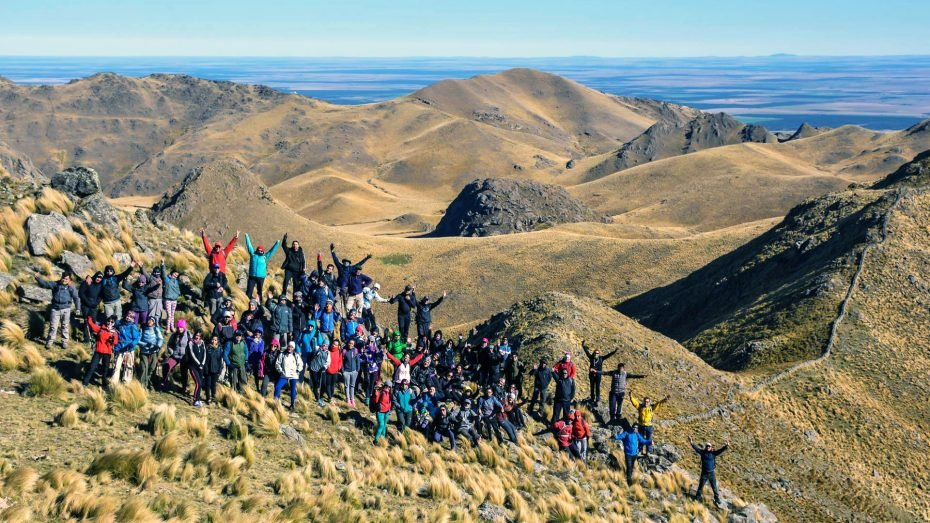

Caminar. Seguir un sendero, perderse, encontrarse a sí mismo. Para los fanáticos de la aventura, no hay nada mejor que recorrer el mundo a pie. A continuación, cinco recorridos únicos entre las sierras de San Luis para descubrir el verdadero sentido de la belleza y la naturaleza en su estado más puro.
Se localiza al noreste de la provincia de San Luis, mide 1600 metros de altura no es un estratovolcán como suele considerarse, pero fue creado por procesos volcánicos hace aproximadamente 2000 millones de años. El cerro El Morro forma parte del Sistema de Áreas Naturales Protegidas de la provincia de San Luis.
Si bordeamos el cerro hacia el sur, poco antes de llegar a la localidad de San José del Morro, está la estancia La Morena. Desde allí se puede subir el volcán haciendo trekking o en una 4×4 por la huella que nos lleva hasta el cráter.
En su cima presenta una depresión con pequeños conos volcánicos cuyas alturas oscilan entre 1500 y 1600 metros.
La composición falso color real de la imagen permite advertir la presencia y distribución de la vegetación de la zona. En verde brillante se observan las zonas de los valles, donde la humedad es mayor. Se identifica también por tonalidad y forma, las parcelas de cultivos, que en este caso se presentan en distintas tonalidades de verde y magenta debido a la reciente siembra o presencia de barbecho.
La vegetación nativa es de pastizales y monte serrano. La presencia de estas pasturas en el centro del cono volcánico, es aprovechada para el pastoreo de ganado bovino, ovino, equino y caprino.
El cerro se convirtió en el lugar ideal para que los principiantes del trekking den sus primeros pasos, tiene un desnivel acumulado de 460 metros. Por lo que es considerado de baja dificultad.
Está ubicado en Juana Koslay, a un poco más de 10 kilómetros de la ciudad de San Luis. Para ascensder se debe tomar el pasaje que se ubica entre las calles 1º de Mayo y Roger Balet.
En la base, hay un cartel que les da la bienvenida a los caminantes.
El Cerro de la Cruz posee una altura de 1215 metros. Al llegar a la cima puede disfrutarse de una hermosa vista de la ciudad de San Luis. En total, se recorren 6,5 kilómetros de distancia desde la base hasta el punto más alto. El tiempo estimado de ascenso para un principiante es entre una hora y media o dos de subida y el mismo tiempo de bajada.
Se encuentra en uno de los “techos” de Potrero de los Funes y presenta un interesante camino, ya que se cruza por montes de molles, talas, espinillos, entre otras especies.
Se accede al inicio del sendero en la tercera curva del camino que se inicia detrás de la iglesia, el tiempo estimado de la excursión es de 8 horas. Este camino es una huella que va bordeando el arroyo Los Molles que va originando piletones en la piedra aptos para bañarse y disfrutar de la frescura de sus aguas.
También se atraviesan diversas quebradas que poseen una vegetación exuberante, que luego ascendiendo por arriba de los 1400 metros se va perdiendo para dar lugar a un estrato herbáceo acompañado de piso rocoso, de allí el nombre del cerro.
Se eleva a 1.328 metros Al mismo se accede a caballo o a pie a través de senderos de cabras o huellas atravesando el nacimiento de vertientes y una vegetación con abundante monte serrano.
Es uno de los Cerros más altos, ubicado en las Sierras Centrales de San Luis, con una altura de 2.152 metros sobre el nivel del mar.
Se puede acceder a él caminando o a caballo atravesando pastizales, montes, cañadones, ríos y vertientes para alcanzar luego la cima donde es posible apreciar el bellísimo paisaje serrano, desde sus balcones de roca natural.
Es apto para practicar trekking, de nivel moderado, por un hermoso paisaje verde, el ascenso a la cima del cerro, dura aproximadamente de un día completo. Hay dos vías de acceso: una por el este: donde las sierras tienen suaves ondulaciones y verdes húmedos, y la otra por el oeste: donde la montaña cae abruptamente originando profundos cañadones, esta opción demanda mayor esfuerzo físico y se accede desde el Suyuque, bordeando el río, por el Peñón ubicado a 7 km de la Capital sanluiseña.